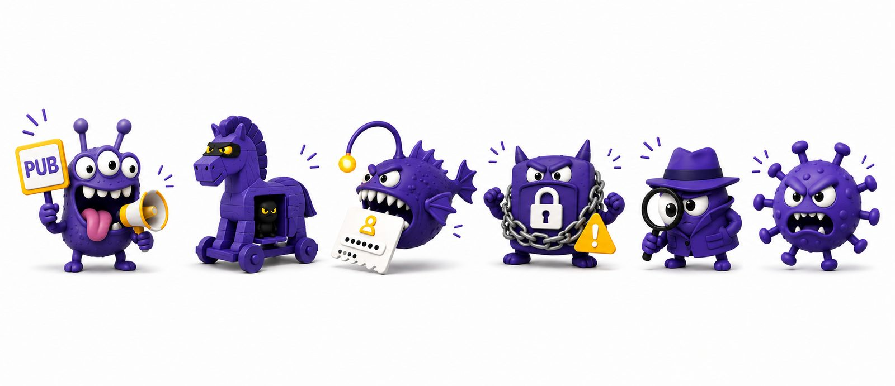

Étape 1 bis · DigComp 4.1
Bestiaire des menaces
Reconnaître les grandes familles de logiciels malveillants à travers des situations du quotidien.
Visuel à venir
assets/hero-bestiaire.jpg

Le principe
Six « bêtes » rôdent dans le monde numérique. Personne ne vous demande de devenir expert : reconnaître la famille suffit à savoir quoi faire.
Pour chaque témoignage ci-dessous, retrouvez de quelle menace il s'agit. La définition s'affiche quand vous avez trouvé.
Exercice — qui a fait le coup ?
Le message clé
Le point commun de presque toutes ces bêtes : elles entrent parce qu'on leur a
ouvert la porte — un clic, une pièce jointe, une installation.
Le meilleur antivirus, c'est le réflexe de vérification. C'est exactement l'objet de la suite de la journée.